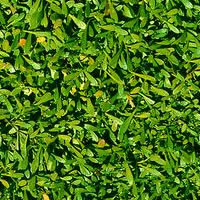

A selection of indoor sod options: reviewed and tested by CosmoFarmer.com
in our state-of-the-art “Apartment Laboratory” on 5th Avenue.
Figure 1: Even the carpet-like Carpetorium Pratensis
requires mowing.Figure 2: Creeping Bentgrass is best suited for outdoor use
and should be avoided by the indoor farmer.Figure 3: This indoor-hybrid of Kentucky Bluegrass has fallen
out of fashion.

Figure 4: Tinea Pedis Poaceae threatens discomfort to
bare feet.Figure 5: The difficult to maintain pattern of this indoor
lawn is a sight to behold.Figure 6: The dandelion: scourge of the apartment farmer.